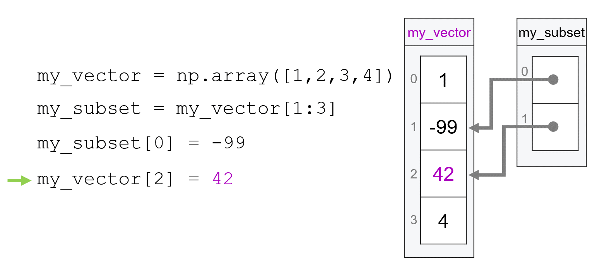

Views and Copies
Contents
Views and Copies#
Before we dive into matrices, there’s one nuance to how vectors (and indeed all numpy arrays) work that we need to cover: how numpy manages memory allocation when we take subsets of arrays.
Because this reading relates to the nuances of how numpy is actually managing how it writes 1s and 0s in memory, it may seem a little intimidating at first—don’t worry! This topic is definitely a little mind-bending, and many learners may need to read this more than once to develop a good understanding of what’s going on, and most learners won’t develop an intuitive sense of what’s going on until they have been working with numpy for a while. But this isn’t the start of a big transition of the course into abstract computer science theory—we will get back to working with data quickly. This is just one kinda esoteric topic that numpy users have to wrestle with that we can’t avoid introducing around here.
Memory Allocation & Subsetting#
In our previous reading, we talked about how we could not just look at subsets of vectors, but also store those subsets in a new variable. For example, we could pull the middle entry of one vector and assign it to a new vector:
import numpy as np
a = np.array([42, 47, -1])
a
array([42, 47, -1])
new = a[1]
new
47
At the time, we illustrated what was happening with this set of pictures:


And that was close to the truth about what was going on, but it wasn’t quite the full truth.
The reality is that when we create a subset in numpy and assign it to a new variable, what is actually happening is not that the variable is being assigned a copy of the values being the subset, but rather the variable is being assigned a reference to the subset, something that looks more like this:
When numpy creates a reference to a subset of an existing array, that reference is called a view, because it’s not a copy of the data in the original array, but an easy way to refer back to the original array—it provides a view onto a subset of the original array.
Why is this distinction important? It’s important because it means that both variables—a and new are actually both referencing the same data, and so changes made to one variable propagate to the other.
To illustrate in more detail, let’s create two new vectors: my_vector and my_subset, where my_subset (as the name implies) is just a subset of my_vector:
my_vector = np.array([1, 2, 3, 4])
my_vector
array([1, 2, 3, 4])
my_subset = my_vector[1:3]
my_subset
array([2, 3])
Now suppose we change the first entry of my_subset to -99:
my_subset[0] = -99
Since the first entry in my_subset is just a reference to the second entry in my_vector, the change I made to my_subset will also propagate to my_vector:
my_vector
array([ 1, -99, 3, 4])
Note that because my_subset is a view of the second and third elements of my_vector, our change to the first element of my_subset resulted in a change to the second element of my_vector.
And just as edits to my_subset propagate to my_vector, edits to my_vector will also propagate to my_subset. Suppose we changed the second entry of my_vector to 42. What would happen to my_subset? Which entry would change?
Well if we return to our illustration, we see:

And indeed we can confirm the change occurs to the second element of my_subset:
my_vector[2] = 42
my_subset
array([-99, 42])
Language and Symmetry#
It’s worth pausing for a moment to point out a bit of a problem with the language of views and copies. It is common, in numpy circles, to look at the example above and talk about my_vector being the original data and my_subset as a view. And it is true that, because my_vector came first, there is a difference between my_vector and my_subset in terms of how numpy is creating and managing these objects.
But from your perspective as a user, it is important to recognize that there is a symmetric dependency between my_vector and my_subset in the example above. Yes, one may be “the original,” but once a view has been created, changes to either array have the potential to propagate to the other: changes to the my_subset may resultant changes to my_vector, and changes to my_vector can impact the my_subset (if they impact the portion of the array referenced by the subset).
So when you think about views, always remember that what we’re talking about is multiple objects sharing the same data, even if we tend to only talk about one of our arrays as “a view.”
Why? Why Would numpy Do This?!#
It is not uncommon for students to feel a little betrayed by numpy when they are first introduced to this behavior. “Why,” they ask, “why would numpy do something that makes it so much harder to keep track of the consequences of changes I make to my data?”
The short answer, as with most things in numpy, is that it’s all about speed. Creating a new copy of the data contained in the subset of a vector takes time (it literally requires your computer to write lots of 1s and 0s to memory), and so creating views instead of copies makes numpy faster.
How much faster? The short answer is a lot faster. The longer answer? Well, let’s talk a little more about how views and copies work, then in our next reading, we can do an experiment to measure the speed difference below.